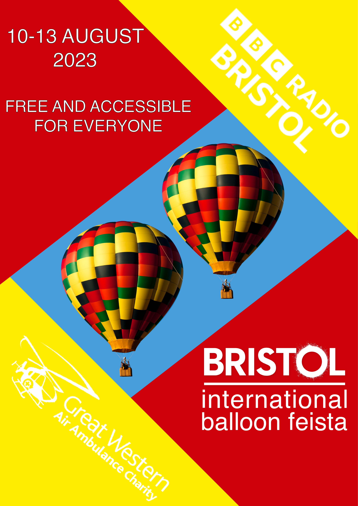
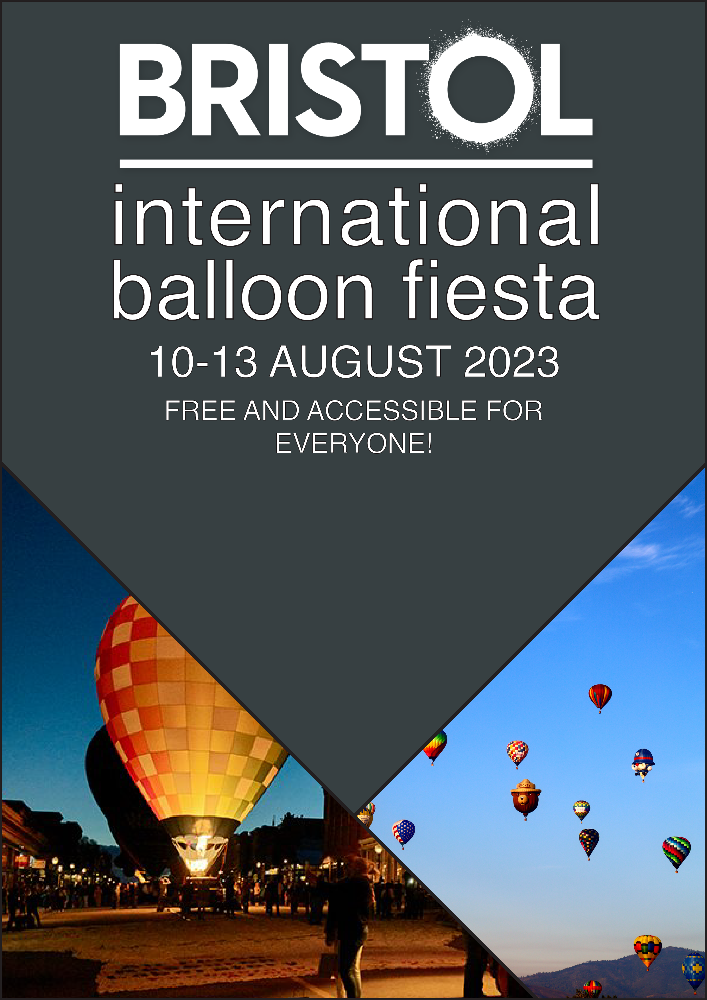

This is my first design. I wanted to go with a minimalistic design with the main focus being on
the balloons. I made the balloons in illustrator by outlining one of the images provided in the
carp task zip file. Looking back at this poster, I feel i should've made the balloon's secondary
colour the same shade of grey as the background instead of black.

This is my second design. I went with a bright theme to attract people's eyes. I cut out one of
the balloons from the zip file and copied to so I had two of them. I chose red and yellow
because they are vibrant colours and they are also featured on the actual balloon. I originally
wanted all the text/logos to be on an angle but the bristol logo and the date/price didn't look
right so I only angled the two other logos.

This is my third design. I went with a very minimalistic style and cut out two parts of the
images from the zip file. I wanted the main focus to be on the logo and details about the event
so I gave it a large font so it catches peoples eyes.